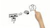

contraception

Definition: Birth control, also known as contraception, anticonception, and fertility control, is the use of methods or devices to prevent unintended pregnancy. Birth control has been used since ancient times, but effective and safe methods of birth control only became available in the 20th century. Planning, making available, and using human birth control is called family planning. Some cultures limit or discourage access to birth control because they consider it to be morally, religiously, or politically undesirable.
Source: Wikipedia
Wikipedia Page (Something wrong with this association? Let us know.)
Wikidata Page (Something wrong with this association? Let us know.)